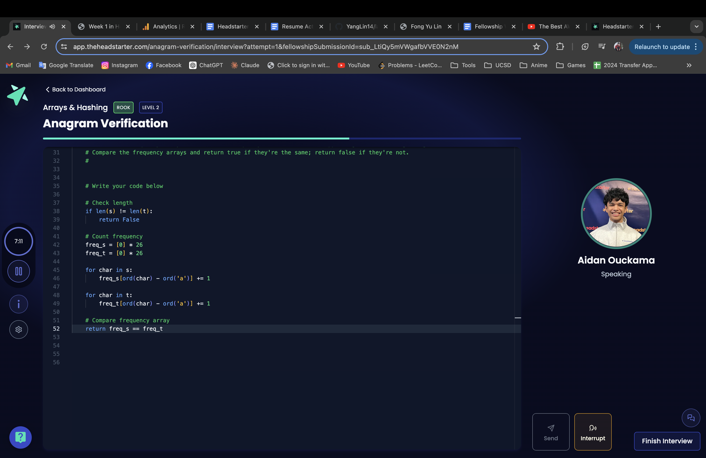
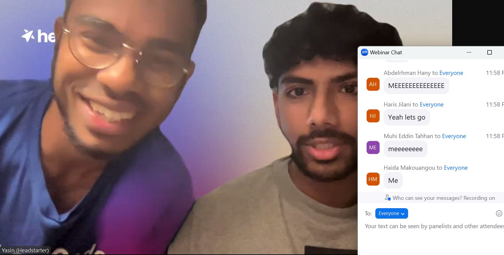
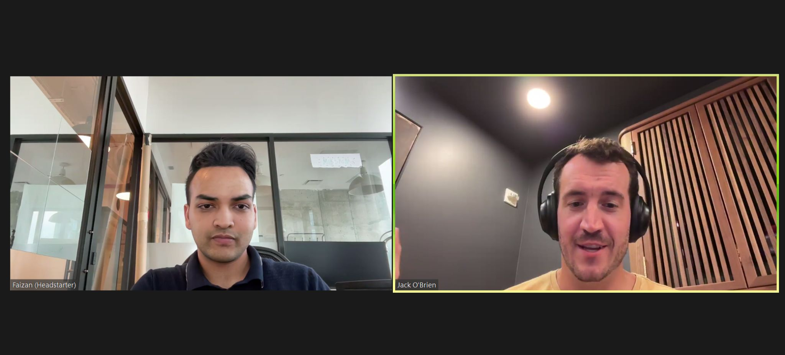
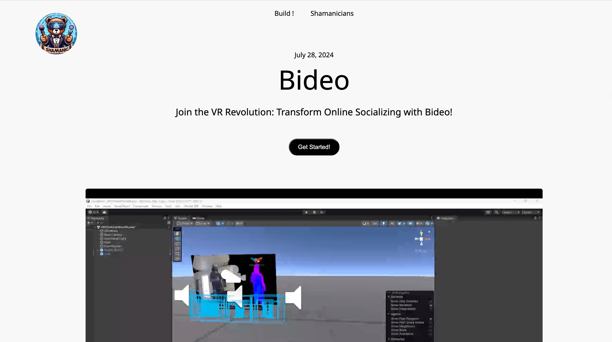
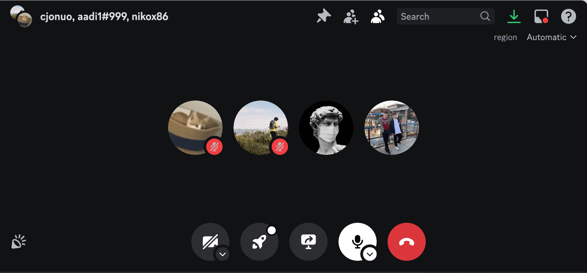
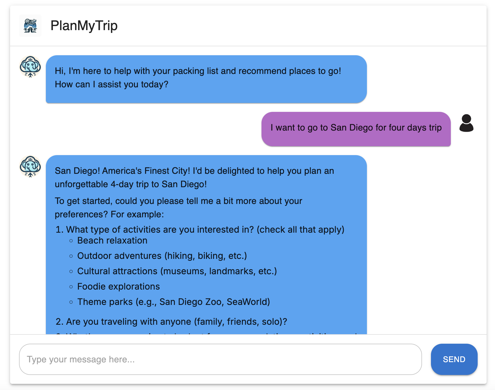
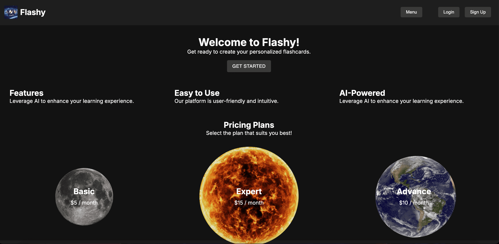

A 7-week intensive fellowship where I developed key professional competencies including strategic project planning, teamwork under pressure, and personal branding. The program emphasized hands-on project work, networking, and receiving constructive feedback to accelerate personal and professional growth.
Weekly Breakdown
-
Week 1
Website Development Foundations
Learned HTML & CSS to create my first personal website. Gained insights from startup co-founders on career navigation and the importance of marketing, and participated in mock interviews.
 -
Week 2
Advanced Web Development & Teamwork
Collaborated on "Bideo," a volumetric video player for VRChat, and learned about effective stand-up meetings. Also developed a personal project, "ListVaults," to track watch lists.
 -
Week 3
AI Travel Planning
Developed "PlanMyTrip," an AI-powered platform to make travel planning effortless with personalized recommendations and comprehensive itineraries.
 -
Week 4
AI Education Tools
Created "Flashy," an innovative AI platform for generating high-quality flashcards, implementing features like user authentication with Clerk and secure data storage with Firebase.
 -
Weeks 5-7
Ongoing Projects and Growth
Focused on advanced AI development techniques, machine learning implementation, project management, and final project presentations.
Skills Developed
- HTML/CSS
- JavaScript
- AI Development
- Machine Learning
- Team Collaboration
- Project Management
- Agile Methodologies